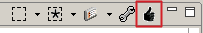
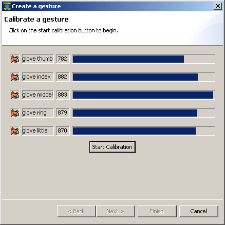
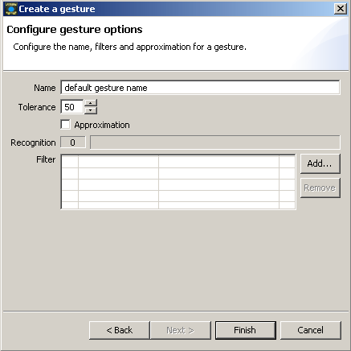

Gestures
I What is a JGlove gesture?
A JGlove gesture depends on a selection of sensors. If a gesture is created, the values of the selected
sensors are stored. For example a simple "thumb up" can be stored as a gesture. By the fact that
the Glovebox and JGlove can process any kind of sensors like force and tilt sensors, a JGlove
gestures can be of course a much more complex event.
A once created and activated gesture will be diplayed and treated like any
other sensor, therefore it is possible to "midify" a gesture and add the
gesture value to the log output file.
The active gesture sensor will also be displayed in all monitors.
An example: Midify your "thumb up" gesture, choose a "note on" and
play an "applause" sample with your MIDI sample player,
when you do a "thumb up" gesture in your performance.
II Types of gestures recognition
JGloves provides two kinds of gesture recognition.
The standard recognition simply checks if a gesture is dectected. If a gesture is detected the
gesture sensor has the maximum value (127). If the gesture is not recognized the
gesture sensor has the value 0. With the help of the tolerance parameter you can appoint
the accurance of a gesture. The lower the tolerance value, the more exact must be the gesture
before its been detected.
JGlove provides also a more complex gesture recognition. If you click the approximation button
within the gesture creation window the approximation recognition is activated.
Instead of simply checking if the gesture is reached or not, an approxmiation
value is calculated.
In this mode the gesture sensor can have all values between minimum (0) and maximum (127).
With the help of advanced gesture cognition you can create full scaled sensors.
The tolerance parameter influences the value of the gesture. The lower the tolerance value,
the lower will be the gesture sensor value.
III Creating a gesture.
- Open the Sensor Setup (
 ).
).
- Select the senors you want to use for the gesture.
- Click the gesture button in the tool bar of the Sensor Setup View.

The following wizard will open:

- Press the "Start Calibration" Button.
Now you have 3 seconds to set your gesture. If you are not satisfied, simply click the button again.
- Press the "Next >" Button.
You will see the following page:

Now can rename your gesture (recommened), set the tolerance value and activate
the approximation mode. If you like, you can also add a filter.
- If you want to finish and store the gesture press "Finish".
If you don't want to store the gesture and delete it, press "Cancel".